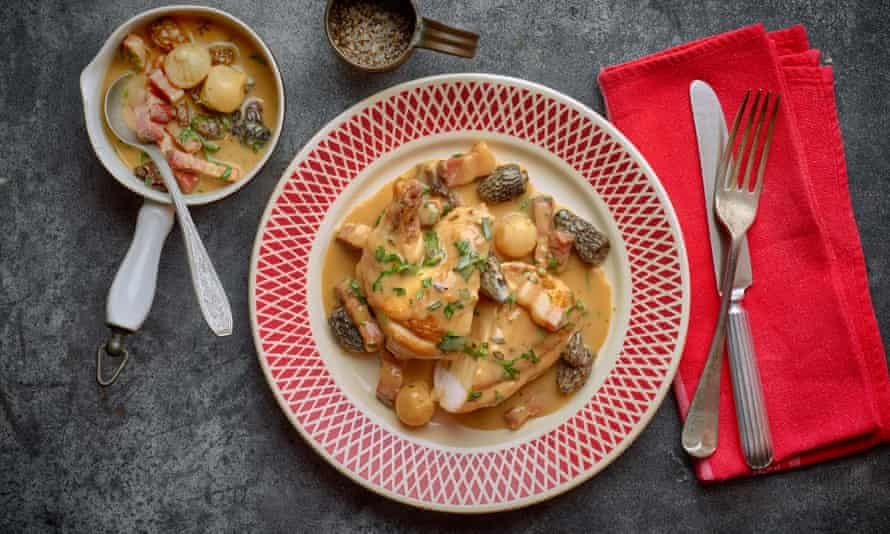

Tarragon chicken

Chicken is comfort food to me, it smells of home, of family, and can be enjoyed any time of the year. It is one of the most satisfying meals I know. This tarragon chicken was inspired by my grandmother’s recipe, tarragon being one of my favourite ingredients. Another thing I love about this dish is how versatile it is and can be adapted with the seasons. For example, over the summer, I use girolles mushrooms instead of morels.
In a large ovenproof pan, heat the olive oil over a medium heat. Season the chicken and cook, skin-side down, until golden. Set aside. Add the onions and bacon and cook slowly until lightly golden. Set aside. Brown the mushrooms and set aside.
Drain most of the fat from the pan. Pour in the wine and reduce by half. Add the stock and reduce by half again. Add the cream and bring back to a simmer.
Add the thighs and drumsticks and simmer for 30 minutes. Add the bacon, onions, mushrooms and thyme and cook for 5 minutes, then add the chicken breasts. Simmer gently for 8-10 minutes, depending on their size. Remove the breasts and legs and keep warm.
Add the creme fraiche to the sauce. Simmer until thick enough to coat the back of a spoon.
Check the seasoning and return the chicken to the sauce with the tarragon. Serve with rice.